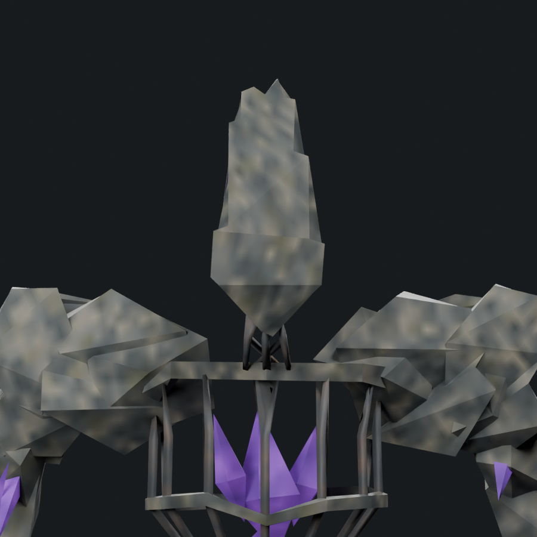
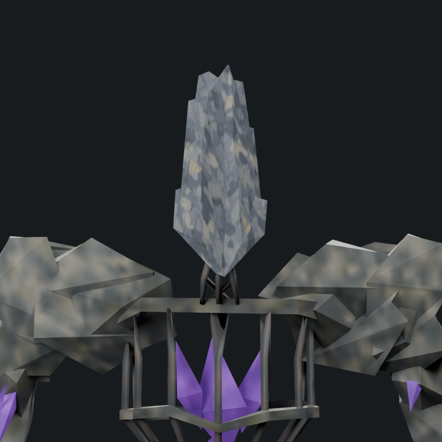
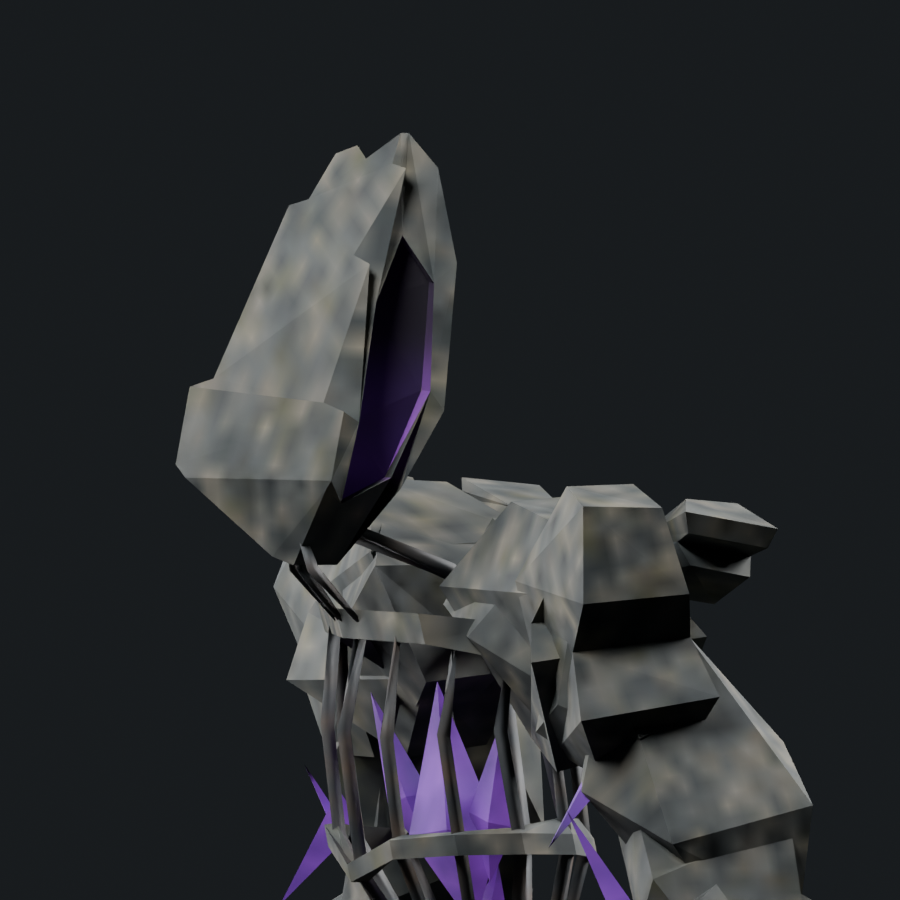
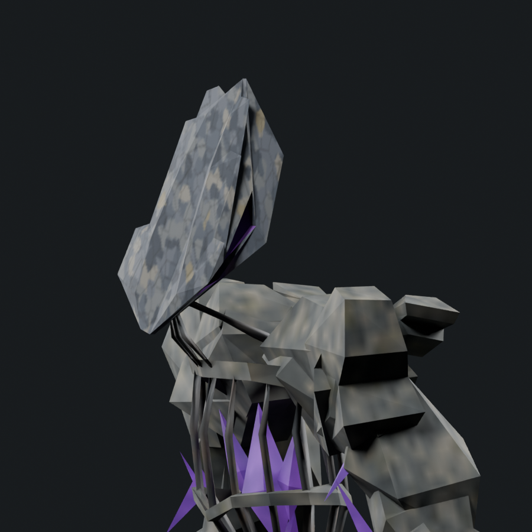
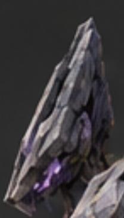
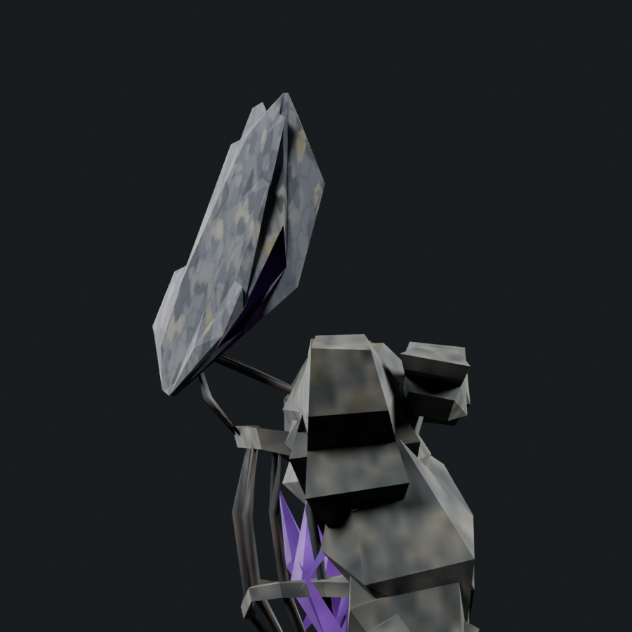
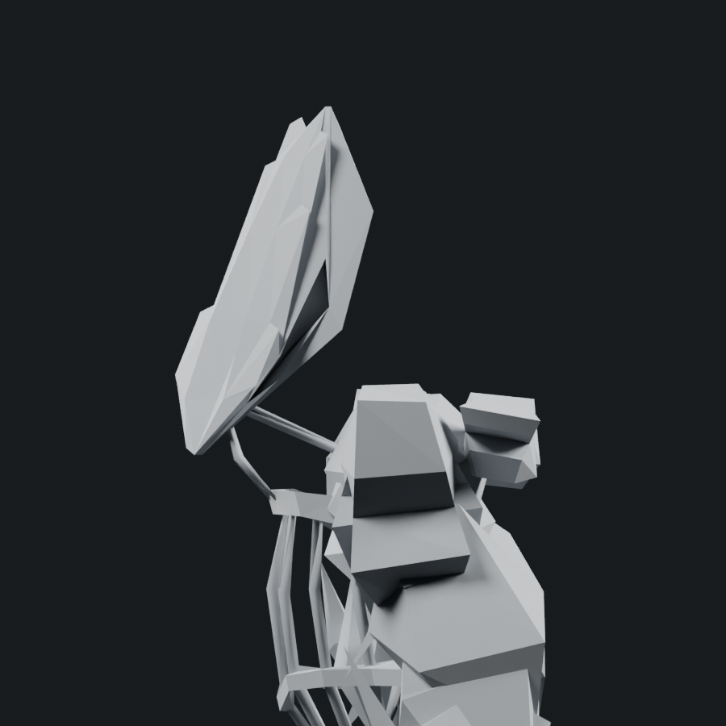
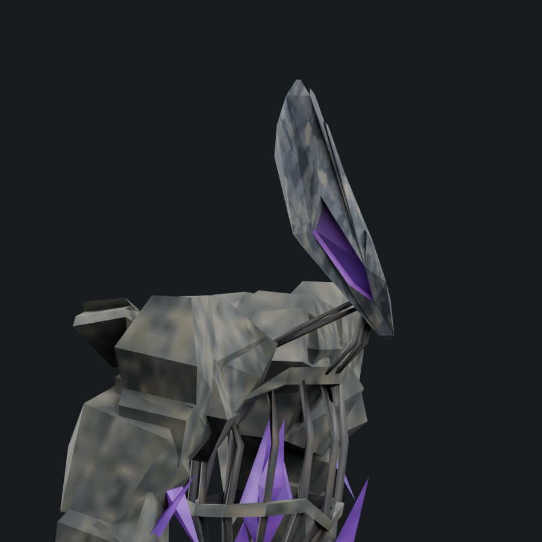
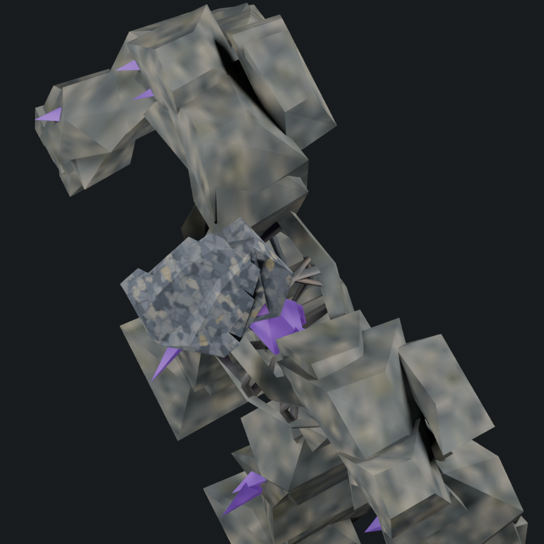
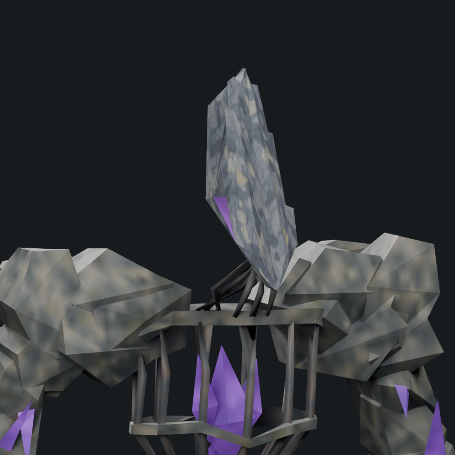

Editable art study; not accepted or installed. The adequate-boss tally remains 1/6. Offline geometry checks and these renders do not establish native animation, collision or frame cost.
Portable skinned model · Editable Blender source · Changes, measurements and remaining gaps · Saved-source verification
1,800 triangles / native donor 1,200 / soft cap 1,800; one mesh/material and four packed 512px maps. Historical models are re-rendered from saved sources with exact current cameras; native donors use the same directions/light recipe with normalized framing. Painted views have their own perspective.










The head still needs more individually chipped layering and more reference-specific stone treatment. The whole boss is not accepted. See r17 for the subsequent body work; this head stage keeps the earlier body intact.